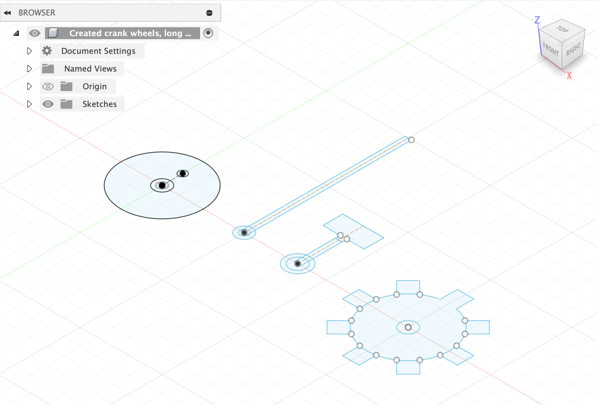
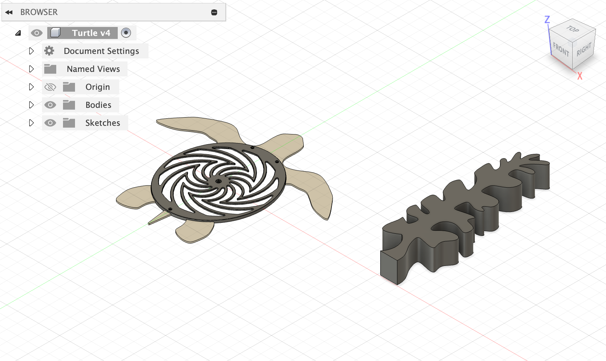

<div class="textcontainer">
<p class="margin"> </p>
<h3>Week 3: Hand Tools and Fabrication</h3>
<p><br></p>
<h3>Kinetic Sculpture: Learning Process</h3>
We were tasked to create a Kinetic Sculpture. This process took multiple rounds of fine-tuning and going back to the drawing board. This particular section goes over the entire process from scratch. If you want to understand how to assemble it, scroll down to the next section.
<p><br></p>
<h4>Version 1</h4>
<p></p>
I'm from Florida, and so I wanted to make a kinetic sea turtle whose flippers would move using a crank-shaft mechanism.
I was inspired by <a href="https://www.youtube.com/watch?v=OX8q5n8GdNE">this video</a>.
I first created a drawing of how I envisioned the mechanics to move:
<p><br></p>
<img class="center_image" src="part1_final.jpeg" alt="Drawing">
<p><br></p>
After creating a rough outline of what I wanted, I began to make the parts necessary. I started with a 3D
testing feature for the gears. I followed <a href="https://www.youtube.com/watch?v=qAzCdCLvk6A">this tutorial</a>
to create the gears. Shown below is a video of them moving:
<p><br></p>
<video class="center_image" width="640" height="360" controls>
<source src="version1_gear.mov" type="video/quicktime">
Your browser does not support the video tag.
</video>
<p><br></p>
After the gears, I made the rest of the parts shown from the drawing. Here are their 2D sketches:
<p><br></p>

<p><br></p>
I 3D printed these components using cardboard. To quickly test that the gears spun outside of Autodesk, I used double-sided tape to
assemble items and plastic axels that lay in the shop to mimic rotation.
<p><br></p>
<video class="center_image" width="640" height="360" controls>
<source src="version1_gear_sample.MOV" type="video/quicktime">
Your browser does not support the video tag.
</video>
<p><br></p>
It appears to work, but it needs to be more sturdy. That is fine for the next version.
Once I began to put the rest of the pieces on using bolts and nuts, I found areas for improvement.
For one, the crank shaft would not stay upright, and this is because it needs a support peg to prevent it
from moving too far left or right at any point. I would need to 3D print a type of
box whose roof would have slits to function similarly to support pegs. This is what the next version will focus on.
<p><br></p>
Once the mechanical parts were made and tested around with, I moved onto the decorative parts.
I grabbed a turtle design from <a href="https://grabcad.com/library/gyres-turtle-1">GrabCad</a>. I used the projection feature on Autodesk Fusion to project the 3D model onto a 2D sketching plane.
I also make kelp using the control-point spline feature in Autodesk Fusion. Here were the results:
<p><br></p>

<p><br></p>
<h4>Version 2</h4>
For this part, I focused on making my box. I initially made 4 sides, but after 3D printing them,
I needed wiggle-room to put in the items, and I also accidentally positioned the gears too close to one edge so I couldn't put up the 4th wall even if I wanted to. But I like it better
this way for now. The slits on the roof were cut with an exacto-knife to allow me more flexibility
to position the gears. I also began to use more permanent methods of fastening items together, namely
nuts/bolts along with hot glue. The image below shows the first gear-part being glued down.
It includes one gear, an axel, two support bases, and two crank-shifts.
<p><br></p>
<img class="center_image" src="version2_3walls.HEIC" alt="Parts">
<p><br></p>
After putting in the first gear-part, I added the second-gear part. I had to hot-glue two smaller plastic axels
together because the ones in the shop weren't as long as what I wanted. This gear-part consists of one gear,
an axel, and two support beams. I initially put the beams on either side of the wheel, but one beam
was coming into contact with the crank shift and causing friction, so I put it on the outside.
I made some changes from the previous photo:
<ol>
<li><b>Change 1:</b> the two-crank shifts were tough. It turned out that I can't hot glue the outer sides of them, otherwise
the glue gets in the way of the rod and causes it to get stuck. I had to peel away what I could and re-hot glue
them on the interiors for it to work.</li>
<li><b>Change 2:</b> another thing I had to change was the bolt size. I was using M5 bolts but the bolt head was too budgy
and was coming into contact with the long-axels or sides of the walls. I switched to M3 bolts with flat heads
and that did the trick.</li>
</ol>
<p><br></p>
<video class="center_image" width="640" height="360" controls>
<source src="version2_samplefilm.MOV" type="video/quicktime">
Your browser does not support the video tag.
</video>
<p><br></p>
This version looks pretty much like what I want, but there's a few tiny things I need to now fix or add:
<ol>
<li>I need to 3D print a component to connect the long-axel to a motor. The motor's axel hole is super tiny, so I
might change my current axel for a smaller wooden dowel and then adjust the gear's hole diameter to match.</li>
<li>The crank shaft wheel is a bit big and can cause friction. I might downsize its diameter (and, if I change the axel, also its axel hole diameter).</li>
</ol>
<p><br></p>
<h3>Kinetic Sculpture: Steps to Build</h3>
<p class="margin"> </p>
<div class="flexrow">
<a id="btn" href="./temp.zip" download>Download CAD Files
</a>
</div>
<p class="margin"> </p>
</div>